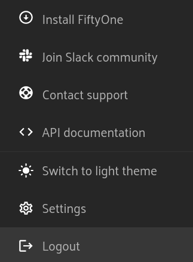
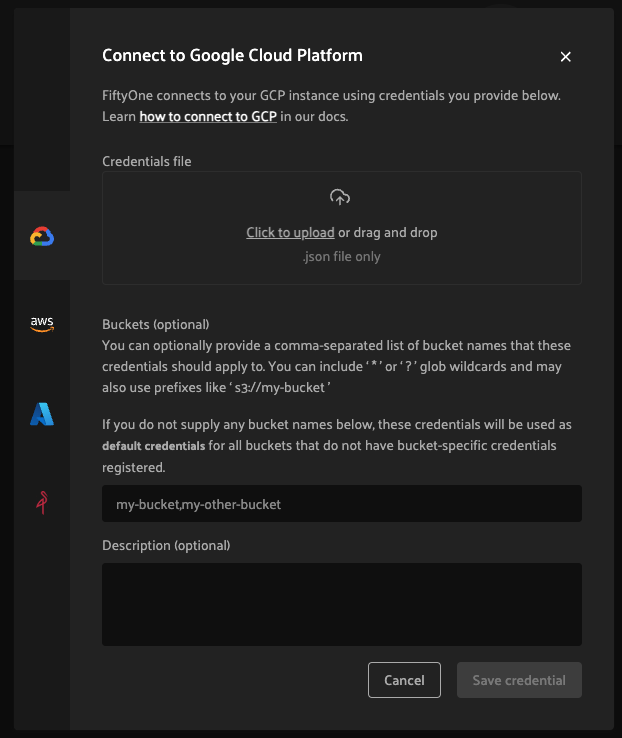

FiftyOne Teams Installation¶
FiftyOne Teams deployments come with a centralized FiftyOne Teams App and database that allows your entire team to collaborate securely on the same datasets. FiftyOne Teams is deployed entirely into your environment, either on-premises or in a private cloud. Your data never leaves your environment.
FiftyOne Teams can be deployed on a wide variety of infrastructure solutions, including Kubernetes and Docker.
Note
Detailed instructions for the initial FiftyOne Teams deployment, along with all necessary components, are made available by your Voxel51 CS engineer during the onboarding process.
Python SDK¶
While the FiftyOne Teams App allows for countless new App-centric workflows, any existing Python-based workflows that you’ve fallen in love with in the open-source version of FiftyOne are still directly applicable!
FiftyOne Teams requires an updated Python SDK, which is a wrapper around the open-source FiftyOne package that adds new functionality like support for cloud-backed media.
You can find the installation instructions under the “Install FiftyOne” section of the Teams App by clicking on your user icon in the upper right corner:
{kind=link}
There you’ll see instructions for installing a fiftyone package from the
private PyPI server as shown below:
pip install --index-url https://${TOKEN}@pypi.fiftyone.ai fiftyone
Note
See Installation with Poetry if you use
poetry instead of pip.
Note
The Teams Python package is named fiftyone and has the same module
structure as fiftyone, so any existing scripts you
built using open source will continue to run after you upgrade!
Next Steps¶
After installing the Teams Python SDK in your virtual environment, you’ll need to configure two things:
Your team’s API connection or MongoDB connection
The cloud credentials to access your cloud-backed media
That’s it! Any operations you perform will be stored in a centralized location and will be available to all users with access to the same datasets in the Teams App or their Python workflows.
Installation with Poetry¶
If you are using poetry to install your
dependencies rather than pip, you will need to follow instructions in
the docs for installing from a private repository.
The two key points are specifying the additional private source and declaring
that the fiftyone module should be found there and not the default PyPI
location.
Add source¶
In poetry v1.5, it is recommended to use an explicit package source.
poetry source add --priority=explicit fiftyone-teams https://pypi.fiftyone.ai/simple/
Prior to v1.5, you should use the deprecated secondary package source.
poetry source add --secondary fiftyone-teams https://pypi.fiftyone.ai/simple/
Configure credentials¶
poetry config http-basic.fiftyone-teams ${TOKEN} ""
Alternatively, you can specify the credentials in environment variables.
export POETRY_HTTP_BASIC_FIFTYONE_TEAMS_USERNAME="${TOKEN}"
export POETRY_HTTP_BASIC_FIFTYONE_TEAMS_PASSWORD=""
If you have trouble configuring the credentials, see more in the poetry docs here.
Add fiftyone dependency¶
Replace X.Y.Z with the proper version
poetry add --source fiftyone-teams fiftyone==X.Y.Z
Note
Due to an unresolved misalignment
with poetry and a FiftyOne dependency, kaleido, you must add it
to your own dependencies as well:
poetry add kaleido==0.2.1
You should then see snippets in the pyproject.toml file like the following
(the priority line will be different for poetry<v1.5):
[[tool.poetry.source]]
name = "fiftyone-teams"
url = "https://pypi.fiftyone.ai"
priority = "explicit"
[tool.poetry.dependencies]
fiftyone = {version = "X.Y.Z", source = "fiftyone-teams}
Cloud credentials¶
In order to utilize cloud-backed media functionality of FiftyOne Teams, at least one cloud source must be configured with proper credentials. Below are instructions for configuring each supported cloud provider for local SDK use or directly to the Teams containers. An admin can also configure credentials for use by all app users.
Cross-origin resource sharing (CORS)¶
If your datasets include cloud-backed point clouds or segmentation maps, you may need to configure cross-origin resource sharing (CORS) for your cloud buckets. Details are provided below for each cloud platform.
Browser caching¶
If your datasets include cloud-backed media, we strongly recommend configuring your data sources to allow for built in browser caching. This will cache signed URL responses so you don’t need to reload assets from your cloud storage between sessions. Details are provided below for each cloud platform.
Amazon S3¶
To work with FiftyOne datasets whose media are stored in Amazon S3, you simply need to provide AWS credentials to your Teams client with read access to the relevant objects and buckets.
You can do this in any of the following ways:
1. Configure/provide AWS credentials in any format supported by the boto3 library. For example, here are two of the supported methods:
# Access key
export AWS_ACCESS_KEY_ID=...
export AWS_SECRET_ACCESS_KEY=...
export AWS_SESSION_TOKEN=... # if applicable
export AWS_DEFAULT_REGION=...
# Web identity provider
export AWS_ROLE_ARN=...
export AWS_WEB_IDENTITY_TOKEN_FILE=...
export AWS_ROLE_SESSION_NAME... #if applicable
export AWS_DEFAULT_REGION=...
2. Provide AWS credentials on a per-session basis by setting one of the following sets of environment variables to point to your AWS credentials on disk:
# AWS config file
export AWS_CONFIG_FILE="/path/to/aws-config.ini"
export AWS_PROFILE=default # optional
# Shared credentials file
export AWS_SHARED_CREDENTIALS_FILE="/path/to/aws-credentials.ini"
export AWS_PROFILE=default # optional
In the above, the config file should use this syntax and the shared credentials file should use this syntax.
Note
FiftyOne Teams requires either the s3:ListBucket or
s3:GetBucketLocation permission in order to access objects in S3 buckets.
If you wish to use multi-account credentials, your credentials must have
the s3:ListBucket permission, as s3:GetBucketLocation does not support
this.
3. Permanently register AWS credentials on a particular machine by adding the following keys to your media cache config:
{
"aws_config_file": "/path/to/aws-config.ini",
"aws_profile": "default" # optional
}
If you need to configure CORS on your AWS buckets, here is an example configuration:
[
{
"origin": ["https://fiftyone-teams-deployment.yourcompany.com"],
"method": ["GET", "HEAD"],
"responseHeader": ["*"],
"maxAgeSeconds": 86400
}
]
If you would like to take advantage of browser caching you can specify cache-control headers on S3 objects. By default S3 does not provide cache-control headers so it will be up to your browser’s heuristics engine to determine how long to cache the object.
Google Cloud Storage¶
To work with FiftyOne datasets whose media are stored in Google Cloud Storage, you simply need to provide credentials to your Teams client with read access to the relevant objects and buckets.
You can do this in any of the following ways:
1. Configure application default credentials in a manner supported by Google Cloud, such as:
2. Provide GCS credentials on a per-session basis by setting the following environment variables to point to your GCS credentials on disk:
export GOOGLE_APPLICATION_CREDENTIALS="/path/to/gcp-credentials.json"
3. Permanently register GCS credentials on a particular machine by adding the following keys to your media cache config:
{
"google_application_credentials": "/path/to/gcp-credentials.json"
}
In the above, the credentials file can contain any format supported by google.auth.load_credentials_from_file(), which includes a service account key, stored authorized user credentials, or external account credentials.
If you need to configure CORS on your GCP buckets, here is an example configuration:
[
{
"origin": ["https://fiftyone-teams-deployment.yourcompany.com"],
"method": ["GET", "HEAD"],
"responseHeader": ["*"],
"maxAgeSeconds": 3600
}
]
If you would like to take advantage of browser caching you can specify cache-control headers on GCP content. By default GCP sets the max-age=0 seconds meaning no caching will occur.
Microsoft Azure¶
To work with FiftyOne datasets whose media are stored in Azure Storage, you simply need to provide Azure credentials to your Teams client with read access to the relevant objects and containers.
You can do this in any of the following ways:
1. Provide your Azure credentials in any manner recognized by azure.identity.DefaultAzureCredential
2. Provide your Azure credentials on a per-session basis by setting any group of environment variables shown below:
# Option 1
export AZURE_STORAGE_CONNECTION_STRING=...
export AZURE_ALIAS=... # optional
# Option 2
export AZURE_STORAGE_ACCOUNT=...
export AZURE_STORAGE_KEY=...
export AZURE_ALIAS=... # optional
# Option 3
export AZURE_STORAGE_ACCOUNT=...
export AZURE_CLIENT_ID=...
export AZURE_CLIENT_SECRET=...
export AZURE_TENANT_ID=...
export AZURE_ALIAS=... # optional
3. Provide Azure credentials on a per-session basis by setting the following environment variables to point to your Azure credentials on disk:
export AZURE_CREDENTIALS_FILE=/path/to/azure-credentials.ini
export AZURE_PROFILE=default # optional
4. Permanently register Azure credentials on a particular machine by adding the following keys to your media cache config:
{
"azure_credentials_file": "/path/to/azure-credentials.ini",
"azure_profile": "default" # optional
}
In the options above, the .ini file should have syntax similar to one of
the following:
[default]
conn_str = ...
alias = ... # optional
[default]
account_name = ...
account_key = ...
alias = ... # optional
[default]
account_name = ...
client_id = ...
secret = ...
tenant = ...
alias = ... # optional
When populating samples with Azure Storage filepaths, you can either specify paths by their full URL:
filepath = "https://${account_name}.blob.core.windows.net/container/path/to/object.ext"
# For example
filepath = "https://voxel51.blob.core.windows.net/test-container/image.jpg"
or, if you have defined an alias in your config, you may instead prefix the alias:
filepath = "${alias}://container/path/to/object.ext"
# For example
filepath = "az://test-container/image.jpg"
Note
If you use a
custom Azure domain,
you can provide it by setting the
AZURE_STORAGE_ACCOUNT_URL environment variable or by including the
account_url key in your credentials .ini file.
If you would like to take advantage of browser caching you can specify cache-control headers on Azure blobs. By default Azure does not provide cache-control headers so it will be up to your browser’s heuristics engine to determine how long to cache the object.
MinIO¶
To work with FiftyOne datasets whose media are stored in MinIO, you simply need to provide the credentials to your Teams client with read access to the relevant objects and buckets.
You can do this in any of the following ways:
1. Provide your MinIO credentials on a per-session basis by setting the individual environment variables shown below:
export MINIO_ACCESS_KEY=...
export MINIO_SECRET_ACCESS_KEY=...
export MINIO_ENDPOINT_URL=...
export MINIO_ALIAS=... # optional
export MINIO_REGION=... # if applicable
2. Provide MinIO credentials on a per-session basis by setting the following environment variables to point to your MinIO credentials on disk:
export MINIO_CONFIG_FILE=/path/to/minio-config.ini
export MINIO_PROFILE=default # optional
3. Permanently register MinIO credentials on a particular machine by adding the following keys to your media cache config:
{
"minio_config_file": "/path/to/minio-config.ini",
"minio_profile": "default" # optional
}
In the options above, the .ini file should have syntax similar the following:
[default]
access_key = ...
secret_access_key = ...
endpoint_url = ...
alias = ... # optional
region = ... # if applicable
When populating samples with MinIO filepaths, you can either specify paths by prefixing your MinIO endpoint URL:
filepath = "${endpoint_url}/bucket/path/to/object.ext"
# For example
filepath = "https://voxel51.min.io/test-bucket/image.jpg"
or, if you have defined an alias in your config, you may instead prefix the alias:
filepath = "${alias}://bucket/path/to/object.ext"
# For example
filepath = "minio://test-bucket/image.jpg"
If you would like to take advantage of browser caching you can specify cache-control headers on MinIO content using the metadata field of the put_object API. By default Minio does not provide cache-control headers so it will be up to your browser’s heuristics engine to determine how long to cache the object.
Extra client arguments¶
Configuring credentials following the instructions above is almost always sufficient for FiftyOne Teams to properly utilize them. In rare cases where the cloud provider client needs non-default configuration, you can add extra client kwargs via the media cache config:
{
"extra_client_kwargs": {
"azure": {"extra_kwarg": "value"},
"gcs": {"extra_kwarg": "value"},
"minio": {"extra_kwarg": "value"},
"s3": {"extra_kwarg": "value"}
}
}
Provider names and the class that extra kwargs are passed to:
- azure:
azure.identity.DefaultAzureCredential - gcs:
google.cloud.storage.Client - minio:
botocore.config.Config - s3:
botocore.config.Config
Cloud storage page¶
Admins can also configure cloud credentials via the Settings > Cloud storage page.
Credentials configured via this page are stored (encrypted) in the Teams database, rather than needing to be configured through environment variables in your Teams deployment.
Note
Any credentials configured via environment variables in your deployment will not be displayed in this page.
To upload a new credential, click the Add credential button:
This will open a modal that you can use to add a credential for any of the available providers:
After the appropriate files or fields are populated, click Save credential
to store the (encrypted) credential.
As depicted in the screenshot above, a credential can optionally be restricted to a specific list of bucket(s):
If one or more buckets are provided, the credentials are bucket-specific credentials that will only be used to read/write media within the specified bucket(s)
If no buckets are provided, the credentials are default credentials that will be used whenever trying to read/write any media for the provider that does not belong to a bucket with bucket-specific credentials
Note
Bucket-specific credentials are useful in situations where you cannot or do not wish to provide a single set of credentials to cover all buckets that your team plans to use within a given cloud storage provider.
When providing bucket-specific credentials, you may either provide bucket
names like my-bucket, or you can provide fully-qualified buckets like
s3://my-bucket and
https://voxel51.blob.core.windows.net/my-container.
Alternatively, credentials can be updated programmatically with the
add_cloud_credentials()
method in the Management SDK.
Any cloud credentials uploaded via this method will automatically be used by the Teams UI when any user attempts to load media associated with the appropriate provider or specific bucket.
Note
By default, Teams servers refresh their credentials every 120 seconds, so you may need to wait up to two minutes after modifying your credentials via this page in order for the changes to take effect.
Note
Users cannot access stored credentials directly, either via the Teams UI or by using the Teams SDK locally. The credentials are only decrypted and used internally by the Teams servers.